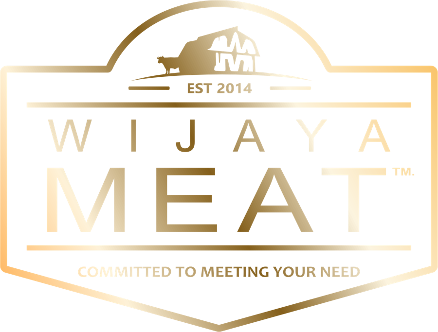
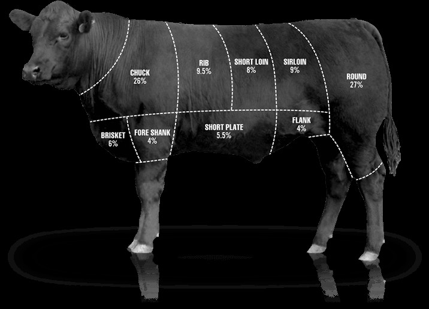

Company Profile
PT. Santi Wijaya Meat
“Committed to Meeting Your Need”
RPH Jonggol · Kabupaten Bogor · Jawa Barat

Salam hormat,
Selamat datang di PT. Santi Wijaya Meat, tempat di mana komitmen kami untuk memenuhi kebutuhan Anda menjadi prioritas utama.
Perjalanan kami dimulai pada tahun 2014 sebagai CV. Wijaya Meat. Pada tahun 2020, kami melangkah lebih jauh dengan resmi menjadi PT. Santi Wijaya Meat, didukung fasilitas RPH dan cold storage bersertifikat NKV Tingkat I serta jaminan halal.
Kami bangga dipercaya memasok daging sapi berkualitas untuk jaringan ritel modern, hotel, restoran, dan mitra industri. Slogan kami, “Committed to Meeting Your Need”, adalah tekad untuk selalu hadir dengan solusi yang tepat dan standar mutu yang konsisten.
Melalui company profile ini, kami mengajak Anda mengenal perjalanan, nilai-nilai, dan komitmen kami sebagai mitra yang dapat Anda andalkan.
Terima kasih atas kepercayaan Anda.
Dari usaha penyedia daging sapi di Jonggol, kami tumbuh menjadi perusahaan dengan rumah potong dan gudang berpendingin bersertifikat, melayani pelanggan di berbagai provinsi.
| Nama | PT. Santi Wijaya Meat |
| Merek | Wijaya Meat |
| Kantor | Perum Asabri Blok B No. 20, Sukasirna, Jonggol, Kab. Bogor |
| RPH & produksi | Jl. SMPN 01 Jonggol, Kp. Menan, Sukamaju, Jonggol, Kab. Bogor |
| Telepon | +62 813-6006-959 |
| official@wijayameat.co.id | |
| Website | www.wijayameat.co.id |
| NIB | 0220008520949 |
| NPWP | 94.813.835.9-436.000 |
| Halal PT | ID00310000134840521 |
| Halal RPH | ID00110015321510124 |
| NKV RPH | RPHR-3201170-007 |
| NKV Gudang | CS-3201170-027 |
| Reg. produk hewan | PHD320104012400241 |
Rumah potong dan fasilitas produksi di Jl. SMPN 01 Jonggol, Kp. Menan, Desa Sukamaju, Kabupaten Bogor.
Gudang berpendingin di Perum Asabri Blok B No. 20, Sukasirna, Jonggol, dengan suhu terkontrol.

Chuck 26% · Round 27% · Sirloin 9% · Rib 9,5% · Short loin 8% · Short plate 5,5% · Brisket 6% · Fore shank 4% · Flank 4%.
Good Warehousing Practices dan Good Hygiene Practices di seluruh area gudang dan RPH.
Chill 0 s.d. -5°C dan frozen -17 s.d. -28°C, dicatat 3 kali sehari.
Di bawah pengawasan Otoritas Veteriner, dengan dokter hewan penanggung jawab teknis.
Setiap produk masuk disertai Certificate of Analysis (CoA) dan sertifikat veteriner dari unit asal.
| Parameter | Daging sapi Terbit 18 Agustus 2026 | Hati sapi (jeroan) Terbit 26 Mei 2026 |
|---|---|---|
| Salmonella spp.SNI ISO 6579-1:2017 | Negatif / 25 g | Negatif / 25 g |
| Staphylococcus aureusSNI ISO 6888-1:2012 | < 1×10² CFU/g | < 1×10² CFU/g |
| Escherichia coliMU 7.2.1.3-1 | < 1×10¹ CFU/g | < 1×10¹ CFU/g |
| Angka Lempeng Total (ALT)SNI 2897:2008 butir 4.1 | 1,8×10² CFU/g | 1,3×10² CFU/g |
| Residu antibiotik 4 golonganSNI 7424:2024 | Negatif | Negatif |
| Parameter | Hasil | Standar |
|---|---|---|
| E. coli | 0 /100 mL | 0 |
| Kekeruhan | 0,45 NTU | < 3 |
| pH | 7,63 | 6,5–8,5 |
| Total padatan terlarut | 96,35 mg/L | < 300 |
| Besi (Fe) | 0,02 mg/L | maks 0,2 |
| Nitrat · Nitrit · Mangan · Kromium VI · Warna | Tidak terdeteksi | di bawah batas standar |
| Parameter | Pisau | Keranjang daging | Swab karyawan (4 sampel) |
|---|---|---|---|
| Escherichia coliSNI ISO 16649-2:2016 | Negatif | Negatif | Negatif |
| Staphylococcus aureusISO 6888-1:2021/Amd 1:2023 | Negatif | Negatif | Negatif |
| Salmonella sp.ISO 6579-1:2017/Amd 1:2020 | Negatif | Negatif | Negatif |
| Angka Lempeng TotalISO 4833-1:2013/Amd 1:2022 | <10 | <10 | <10 (3) · 1,7×10² (1) |
Sampling higiene 9 September 2026 di RPHR Jonggol. ALT per swab (karyawan, pisau) atau per 100 cm² (keranjang). Hasil hanya berlaku untuk sampel yang diuji; laporan asli tersedia atas permintaan.
Proses halal dan kesejahteraan hewan di RPH kami dijalankan oleh tenaga yang memiliki sertifikat kompetensi di bidangnya.
Limbah produksi dikelola dengan sistem terintegrasi dan ditangani setiap saat. Kami bekerja sama dengan Dinas Lingkungan Hidup setempat dalam prosedur perawatan dan pembuangan limbah sesuai regulasi yang berlaku.
Melayani modern market, distributor, horeka, retail, industri di 7+ provinsi.
Penerima penghargaan Pelopor, Penggerak Peternakan Terbaik.
Salah satu dari 5 RPH dengan Sistem Jaminan Halal terbaik dan tercepat.
Gudang dan RPH berpredikat Baik Sekali pada surveilans 24 September 2025.
Juleha, stunner, Animal Welfare Officer, dan penyelia halal bersertifikat.
Potongan premium dari bagian tertentu sapi: empuk, juicy, dan kaya rasa. Umumnya dijadikan steak.
Potongan istimewa bertulang untuk sajian restoran dan acara spesial.
Potongan serbaguna dan ekonomis, cocok untuk masakan Nusantara dan slow cooking.
Bahu, perut, dan dada sapi dengan rasa daging kuat: empuk bila dimasak perlahan.
Potongan bertulang untuk kaldu dan sup, serta daging giling untuk olahan.
Katalog lengkap (Konro, Neckbone, Backbone, Shank, Intercostal, dan lainnya) tersedia melalui QR di halaman kontak.
Tim kami siap membantu kebutuhan daging sapi Anda, dari permintaan khusus hingga pengiriman berpendingin.